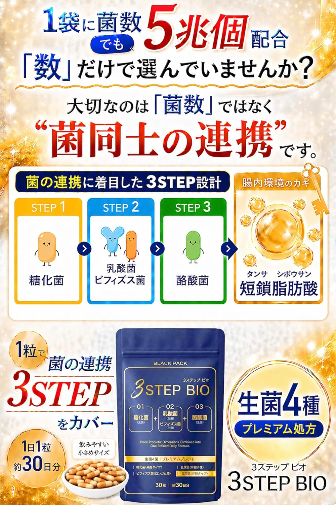
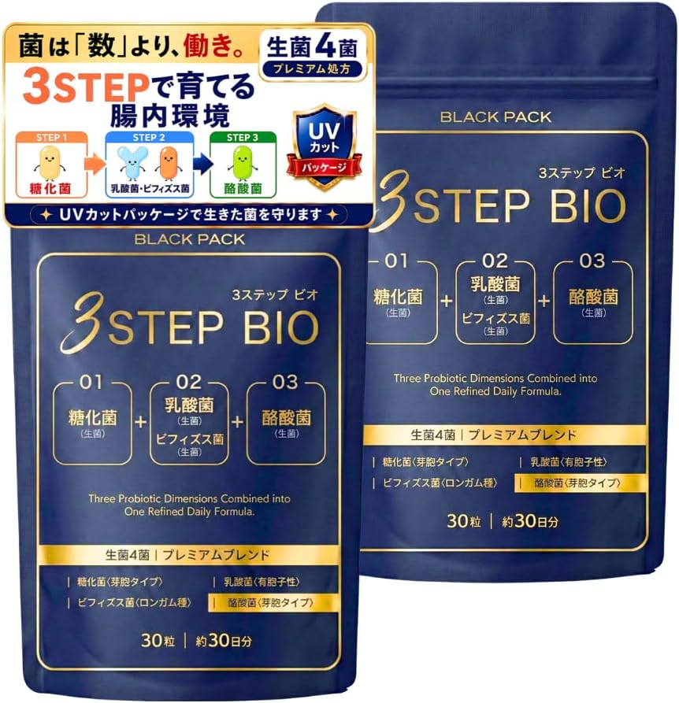
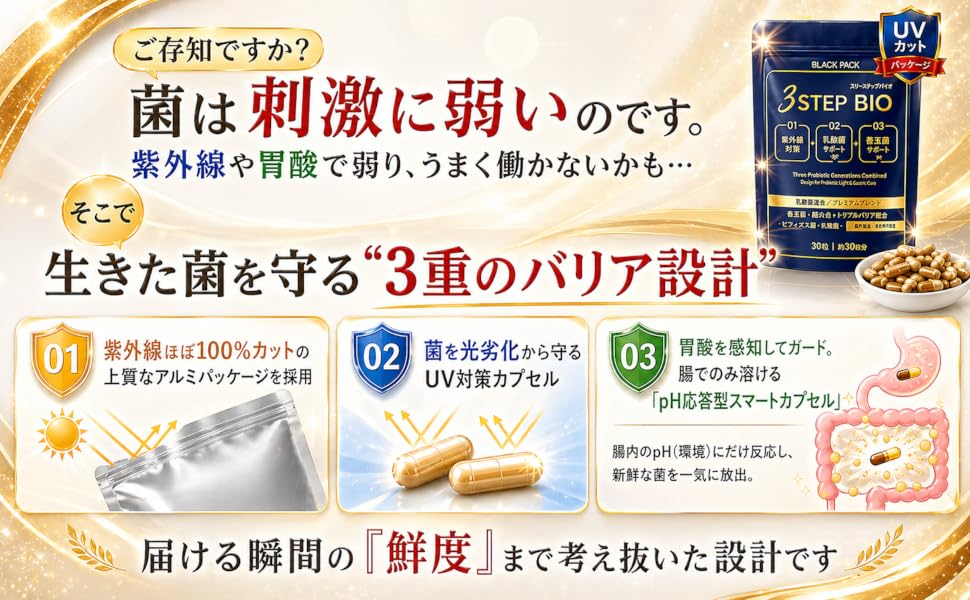

スリーステップ ビオ（30粒／30日分）
円〜
1日1粒目安／対象年齢15歳以上／ブランド：BLACK PACK
通常
%
%

菌は「数」より、働き。
生きた菌4種（糖化菌・乳酸菌・ビフィズス菌・酪酸菌）に、菌のエサになる成分、菌がつくる成分まで組み合わせた「トリプルバイオティクス」設計のサプリ。菌同士の連携に着目し、1袋に約5兆個の菌を配合。生きた菌を光や胃酸から守る3重のバリアで、届けるところまで考えています。
生きた菌が働くには、それぞれに合った“エサ”やサポート役が必要。菌ごとに必要なものを組み合わせ、短鎖脂肪酸（たんさしぼうさん）づくりまで3段階で考えた設計です。
公式の図解（横にスワイプ）
菌は紫外線や胃酸に弱いもの。届ける瞬間の“鮮度”まで考えて、3つのバリアで守ります。

サプリは“飲んですぐ分かる変化”が撮れません。次の4つで見せ場を作ります。
体験の伝え方：「お腹の調子が良くなった」など体の変化は言い切らないのがルール。「毎朝1粒が習慣になった」「小さくて飲みやすい」など続けやすさ・使い心地の感想で語りましょう。
※左下はショップボタン用に空ける ／ 1カット約2秒 ／ ナレーションありが◎
使用ルール
健康食品（サプリ）のため、薬機法・健康増進法・景表法に特に注意してください。効果・効能をうたう表現はNGです。
OKな言い方
×NGな言い方